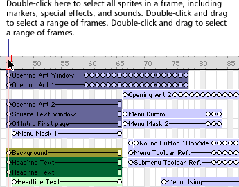
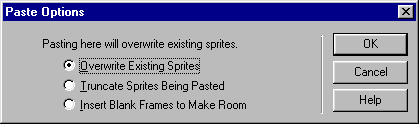

Using Director > Director basics > Selecting and editing frames in the Score
Using Director > Director basics > Selecting and editing frames in the Score |
Selecting and editing frames in the Score
You can select a range of frames in the Score and then copy, delete, or paste all the contents of the selected frames.
To move, copy, or delete all the contents of a range of frames:
1 |
Double-click in the frame channel to select frames.
 |
2 |
If you want to move or copy frames, choose Edit > Cut Frames or Edit > Copy Frames. If you want to delete frames, choose Edit > Clear Frames or press Delete. |
If you cut, clear, or delete the selected frames, Director removes the frames and closes up the empty space. |
|
Note: To delete a single frame, you can also choose Insert > Remove Frame.
3 |
To paste frames that you have cut or copied, select any frame and choose Edit > Paste Sprites. |
If no frame is selected when you choose Edit > Paste Sprites, the Paste Options dialog box lets you decide how you want the frames to be pasted.
 |
|
To add new frames:
1 |
Select a frame in the Score. |
2 |
Choose Insert > Frames. |
3 |
Enter the number of frames to insert. |
The new frames appear to the right of the selected frame. Sprites in the frames you select are extended or tweened. (For more information about tweening, see Animation overview.) |
|